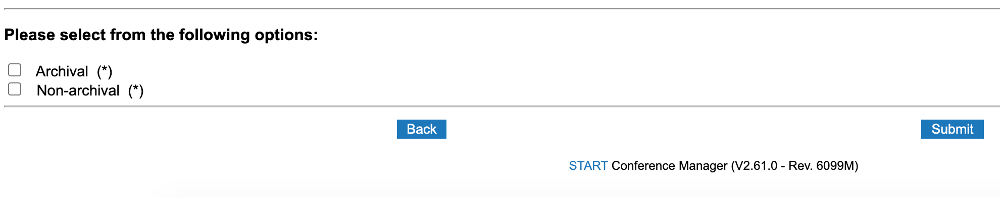

Overview
Leveraging the foundation built in the prior workshops SPLU-RoboNLP 2019 and SpLU-2018 and focusing on the gaps identified therein, we propose the third workshop on Spatial Language Understanding. One of the essential functions of natural language is to express spatial relationships between objects. Spatial language understanding is useful in many research areas and real-world applications including robotics, navigation, geographic information systems, traffic management, human-machine interaction, query answering and translation systems. Compared to other semantically specialized linguistic tasks, standardizing tasks related to spatial language seem to be more challenging as it is harder to obtain an agreeable set of concepts and relationships and a formal spatial meaning representation that is domain independent and that allows quantitative and qualitative reasoning. This has made research results on spatial language learning and reasoning diverse, task-specific and, to some extent, not comparable. Attempts to arrive at a common set of basic concepts and relationships as well as making existing corpora inter-operable, however, can help avoid duplicated efforts within as well as across fields and instead focus on further developments in the respective fields for automatic learning and reasoning. Existing qualitative and quantitative representation and reasoning models can be used for investigation of interoperability of machine learning and reasoning over spatial semantics. Research endeavors in this area could provide insights into many challenges of language understanding in general. Spatial semantics is also very well-connected and relevant to visualization of natural language and grounding language into perception, central to dealing with configurations in the physical world and motivating a combination of vision and language for richer spatial understanding. In the third round of the SpLU workshop, we will focus on the same major topics as:
- Spatial language meaning representation (continuous, symbolic)
- Spatial language learning
- Spatial language reasoning
- Spatial Language Grounding and Combining vision and language
- Applications of Spatial Language Understanding: QA, dialogue systems, Navigation, etc.
Spatial language meaning representation includes research related to cognitive and linguistically motivated spatial semantic representations, spatial knowledge representation and spatial ontologies, qualitative and quantitative representation models used for formal meaning representation, spatial annotation schemes and efforts for creating specialized corpora. Spatial language learning considers both symbolic and sub-symbolic (with continuous representations) techniques and computational models for spatial information extraction, semantic parsing, spatial co-reference within a global context that includes discourse and pragmatics from data or formal models. For the reasoning aspect, the workshop emphasizes the role of qualitative and quantitative formal representations in helping spatial reasoning based on natural language and the possibility of learning such representations from data; and whether we need these formal representations to support reasoning or there are other alternative ideas. For the multi-modality aspect, answers to questions such as the following will be discussed: (1) Which representations are appropriate for different modalities and which ones are modality independent? (2) How can we exploit visual information for spatial language learning and reasoning? All related applications are welcome, including text to scene conversion, spatial and visual question answering, spatial understanding in multi-modal setting for robotics and navigation tasks and language grounding. The workshop aims to encourage discussions across fields dealing with spatial language along with other modalities. The desired outcome is identification of shared as well as unique challenges, problems and future directions across the fields and various application domains related to spatial language understanding.
The specific topics include but are not limited to:
- Spatial meaning representations, continuous representations, ontologies, annotation schemes, linguistic corpora
- Spatial information extraction from natural language
- Spatial information extraction in robotics, multi-modal environments, navigational instructions
- Text mining for spatial information in GIS systems, geographical knowledge graphs
- Spatial question answering, spatial information for visual question answering
- Quantitative and qualitative reasoning with spatial information
- Spatial reasoning based on natural language or multi-modal information (vision and language)
- Extraction of spatial common sense knowledge
- Visualization of spatial language in 2-D and 3-D
- Spatial natural language generation
- Grounded spatial language and dialog systems
Invited Speakers
- James Pustejovsky, Brandeis University
- Yoav Artzi, Cornell University
- Julia Hockenmaier, University of Illinois at Urbana-Champaign
- Douwe Kiela, Facebook
- Bonnie Dorr, Florida Institute for Human and Machine Cognition
Submissions
We encourage contributions with technical papers (EMNLP style, 8 pages without references) or shorter papers on position statements describing previously unpublished work or demos (EMNLP style, 4 pages maximum). EMNLP Style files are available [Here]. Please make submissions via Softconf [Here].Non-Archival option: EMNLP workshops are traditionally archival. To allow dual submission of work to SpLU and other conferences/journals, we are also including a non-archival track. Space permitting, these submissions will still participate and present their work in the workshop, will be hosted on the workshop website, but will not be included in the official proceedings. Please submit through softconf but indicate that this is a cross submission at the bottom of the submission form:

Important Dates
- Submission Deadline:
August 15August 21, 2020 - Notification: Oct 1, 2020
- Camera Ready deadline: Oct 12, 2020
- Workshop Day: November 19/20, 2020
Schedule (Proceedings)
Accepted Papers
Organizing Committee
| Michigan State University | kordjams@msu.edu | |
| IHMC | abhatia@ihmc.us | |
| University of Pittsburgh | malihe@pitt.edu | |
| jasonbaldridge@google.com | ||
| UNC Chapel Hill | mbansal@cs.unc.edu | |
| KU Leuven | sien.moens@cs.kuleuven.be |
Program Committee
| The University of Arizona | |
| University of Trento | |
| Örebro University - CoDesign Lab | |
| Carnegie Mellon University | |
| University of Groningen | |
| Microsoft Research | |
| University of Michigan | |
| Simon Fraser University | |
| University of Leeds | |
| KU Leuven | |
| University of Gothenburg | |
| University of Zurich | |
| Universitat Bremen | |
| University of Maryland Baltimore | |
| IHMC | |
| Bytedance | |
| University of Lisbon | |
| Google Inc. | |
| Lionbridge AI | |
| Open University (The Netherlands) | |
| UT Health | |
| Stanford University | |
| University of Washington | |
| ARL |